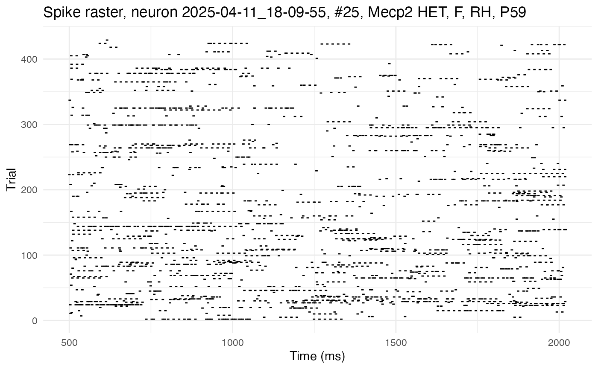
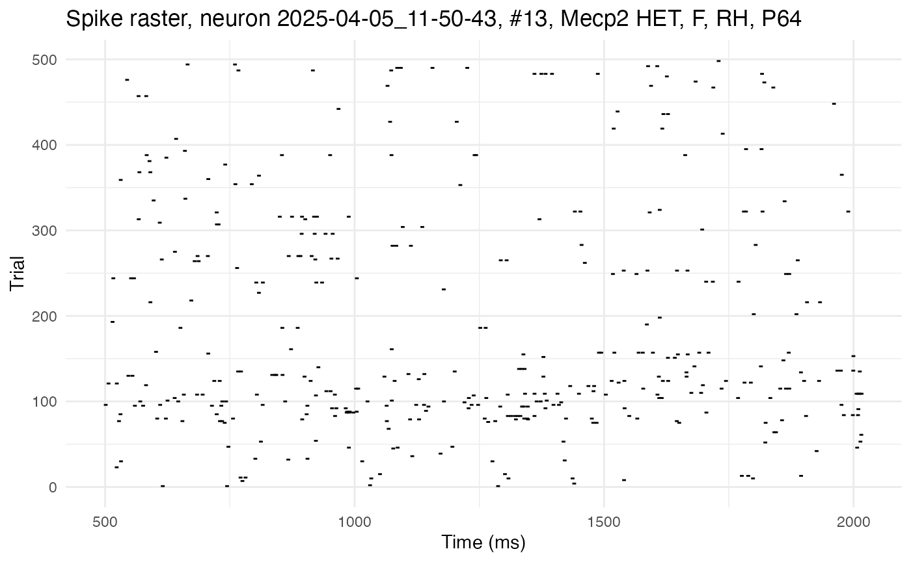
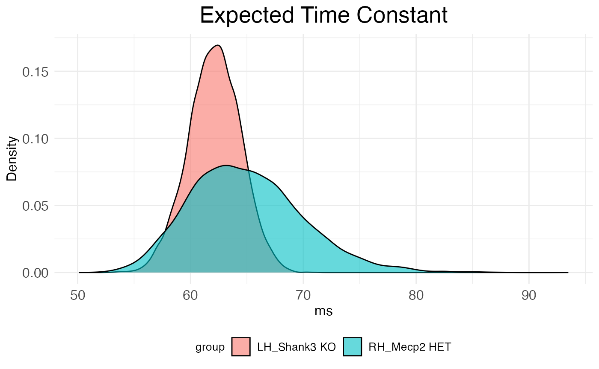

Network time constants from KiloSort4 data
tutorial_tau_est_kilosort.RmdThe neurons package provides functions to use dichotomized Gaussians to estimate network time constants on different kinds of spike data (Macke et al. 2009, Neophytou et al. 2022), including kilosort4 output. KiloSort4 is a Python package, completely distinct from the neurons package, for extracting spike clusters (a proxy for individual neurons) from multi-channel probe recordings. Network time constants provide an estimate of recurrence by quantifying decay in spiking autocorrelation as a function of lag time. A higher network time constant indicates that a neuron receives a larger number of projections back on itself. Intuitively, the longer into the future a spike now increases the probability of a spike later, the stronger the connections from that neuron back onto itself must be.
Load data
Begin by clearing the R workspace, setting a random-number generator seed, and loading the neurons package.
# Clear the R workspace to start fresh
rm(list = ls())
# Set seed for reproducibility
set.seed(12345)
# Load neurons package
library(neurons) Spike and stimulus data
Provide the file path to the output from kilosort4. Recordings from the left and right hemisphere of various genotypes of mice are used for this tutortial. These recordings targeted the auditory cortex and were made while auditory stimuli were played at regular intervals.
# Set path to data
demo_data <- system.file(
"extdata",
"kilo4demo",
package = "neurons"
)The function used to process kilosort4 output is preprocess.kilo4. This function expects its argument data_path to point to a folder the subfolders of which each contain a single kilosort4 output. This output should be in its own folder /kilosort4. The following four files are needed:
-
spike_positions.npy: 2D array giving the x and y
position of each spike
-
spike_clusters.npy: integer giving the cluster
number of each spike
- spike_times.npy: sample number at which the spike occurred
- cluster_group.tsv or cluster_KSLabel.tsv or cluster_info.tsv: 2D array giving status of each cluster (0=noise, 1=MUA, 2=Good, 3=unsorted)
In addition, a MATLAB file includeVector.mat specifying whether each cluster is stimulus-responisve (1) or not (0) should be included in the kilosort4 folder. Finally, along with the kilosort4 subfolder, there should be a file StimulusStamps.csv in each recording folder.

Folder structure necessary for preprocess.kilo4 function.
Covariate data
Metadata about the recordings (formatted as a dataframe) is needed to supply covariates.
# Load
kilo4_metadata <- read.csv(
system.file(
"extdata",
"meta_data_kilo4demo.csv",
package = "neurons"
)
)
# Preview
print(head(kilo4_metadata))## DAY Neuralynx_ID EXPER HEMISPHERE PROBE COORDINATES_SHANK_1 COORDINATES_SHANK_2 STRAIN AGE SEX DEPTH
## 1 2025-02-06 13-06-34 001-001 RH H10b 0,0 0,0 C57 P79 F 1156.0
## 2 2025-02-06 14-03-05 001-002 RH H10b 0,0 0,0 C57 P79 F 1209.0
## 3 2025-02-06 15-36-59 001-004 RH H10b 0,0 0,0 C57 P79 F 1003.0
## 4 2025-02-06 15-53-03 001-005 RH H10b 0,0 0,0 C57 P79 F 1003.0
## 5 2025-02-20 16-19-12 001-001 RH H10b 0,0 0,0 Mecp2 HET P79 F 1191.4
## 6 2025-02-20 17-04-02 001-002 RH H10b 0,0 0,0 Mecp2 HET P79 F 1191.4The neurons package (as of v1.0) can only handle certain covariates, and expects them to have specific names (type, genotype, sex, hemi, region, age). The package also expects the dataframe holding those covariates to have rows labeled with recording names that match the format of the recording names in the data.
# Format and apply recording names to metadata as row names
rownames(kilo4_metadata) <- paste0(
kilo4_metadata$DAY,
"_",
kilo4_metadata$Neuralynx_ID
)
# Keep only the relevant columns (covariates of interest)
kilo4_metadata <- kilo4_metadata[,c("HEMISPHERE","STRAIN","AGE","SEX")]
# Rename columns to match what's expected by neurons package
colnames(kilo4_metadata) <- c("hemi", "genotype", "age", "sex")
# Preview
print(head(kilo4_metadata))## hemi genotype age sex
## 2025-02-06_13-06-34 RH C57 P79 F
## 2025-02-06_14-03-05 RH C57 P79 F
## 2025-02-06_15-36-59 RH C57 P79 F
## 2025-02-06_15-53-03 RH C57 P79 F
## 2025-02-20_16-19-12 RH Mecp2 HET P79 F
## 2025-02-20_17-04-02 RH Mecp2 HET P79 FPreprocessing kilosort4 data into spike rasters
The function preprocess.kilo4 converts cluster spike times into spike rasters of the format expected by the neurons package.
Parsing trials and quality control
The output of kilosort4 must be partitioned into trials, which preprocess.kilo4 does with start and stop times relative to a stimulus specified in StimulusStamps.csv. For example, information about responses to stimuli can be analyzed by setting the start time to something negative (before the stimulus) and the end time to something positive (after the stimulus). However, for estimating autocorrelation, it’s the spontaneous activity during a period of silence after the stimulus which should be analyzed. In this case, the start time should be some time after the stimulus (to allow for settling) and the end time some time later.
spike.rasters <- preprocess.kilo4(
trial_time_start = 500, # ms
trial_time_end = 500 + 1520, # ms
recording.folder = demo_data,
meta_data = kilo4_metadata,
max_spikes = 1e4,
min_spikes = 1e2,
min_trials = 1e2,
pure_trials_only = TRUE,
good_cells_only = TRUE,
stim_responsive_only = TRUE,
verbose = FALSE
) A path (such as demo_data) for the data must be passed to preprocess.kilo4. Metadata (such as kilo4_metadata) is not necessary for the function to run. If left out, the preprocessed output will lack information about covariates.
In addition to the start and stop times and pointers to the data, preprocess.kilo4 has three Boolean variables controlling the quality of clusters extracted for further analysis:
- pure_trials_only: include only trials which do not overlap with other trials (i.e., do not have a start time before the end time of any previous trials)?
- good_cells_only: include only spike clusters which passed hand curation?
- stim_responsive_only: include only spike clusters which are responsive to stimuli?
Three additional numeric variables are also useful for quality control:
- max_spikes: maximum number of spikes a cluster can have to be extracted
- min_spikes: minimum number of spikes a cluster must have to be extracted
- min_trials: minimum number of trials a cluster must have to be extracted
Finally, if verbose is set to TRUE, the function will print out information about the files it is finding and parsing.
Raster format
The output of preprocess.kilo4, in this case spike.rasters, is a list with three elements: spikes, timeXtrial, and cluster.key. The first element, spikes, is a single dataframe giving a compact spike-indexed representation of the spike rasters (plus covariates) from all recordings. Each row is a spike, with columns giving information such as cell number, time, and genotype.
## trial sample cell time_in_ms recording_name cluster hemi genotype age sex
## 3767 1 6881.530 1 503.2369 2025-04-05_11-50-43 17 RH Mecp2 HET P64 F
## 3768 1 6884.632 2 506.3389 2025-04-05_11-50-43 34 RH Mecp2 HET P64 F
## 3770 1 6888.790 3 510.4969 2025-04-05_11-50-43 82 RH Mecp2 HET P64 F
## 3772 1 6892.552 4 514.2589 2025-04-05_11-50-43 1 RH Mecp2 HET P64 F
## 3781 1 6903.673 5 525.3799 2025-04-05_11-50-43 12 RH Mecp2 HET P64 F
## 3783 1 6906.115 2 527.8219 2025-04-05_11-50-43 34 RH Mecp2 HET P64 FThe second element, timeXtrial, is a list of matrices, one per cell, with rows corresponding to time bins and columns to trials. Each entry is a binary indicator of whether the cell fired in that time bin during that trial. Thus, timeXtrial contains the rasters of spikes in a verbose time-indexed format.
The third element, cluster.key, is a dataframe with rows representing clusters (i.e., “cells”) and columns giving information such as cell number, genotype, and number of spikes.
## recording.name cell cluster num.of.spikes num.of.responsive.trials hemi genotype age sex
## 1 2025-04-05_11-50-43 1 17 1869 337 RH Mecp2 HET P64 F
## 2 2025-04-05_11-50-43 2 34 1457 271 RH Mecp2 HET P64 F
## 3 2025-04-05_11-50-43 3 82 2321 325 RH Mecp2 HET P64 F
## 4 2025-04-05_11-50-43 4 1 2461 396 RH Mecp2 HET P64 F
## 5 2025-04-05_11-50-43 5 12 4153 355 RH Mecp2 HET P64 F
## 6 2025-04-05_11-50-43 6 95 2263 360 RH Mecp2 HET P64 FCluster summary
Important summary information can be pulled from cluster.key. For example, how many cells were included in the output?
## Number of cells included: 37The number of cells and summary statistics, such as mean spike and trial count, can be pulled for each covariate combination with the function summarize.cluster.key.
# Print results
covariate_summary <- summarize.cluster.key(
key = spike.rasters$cluster.key,
covariate_list = c("genotype", "hemi", "sex")
)
print(covariate_summary)## genotype hemi sex n_cells mean_spikes mean_trials
## 1 Mecp2 HET RH F 26 1946.9 324.2
## 2 Shank3 KO RH F NA NA NA
## 3 C57 RH F NA NA NA
## 4 Mecp2 HET LH F NA NA NA
## 5 Shank3 KO LH F 1 1334.0 297.0
## 6 C57 LH F 1 2587.0 449.0
## 7 Mecp2 HET RH M NA NA NA
## 8 Shank3 KO RH M NA NA NA
## 9 C57 RH M NA NA NA
## 10 Mecp2 HET LH M NA NA NA
## 11 Shank3 KO LH M 9 728.0 173.0
## 12 C57 LH M NA NA NAThus, for Mecp2 HET mice, 26 clusters from the right hemisphere of females passed the quality control, with none from males or the left hemisphere. For Shank3 KO mice, 9 clusters passed from the left hemisphere of males and 1 from the left hemisphere of females, with none from the right hemisphere. For C57 (wildtype) mice, 1 cluster passed from the left hemisphere of females, with none from males or the right hemisphere.
Converting to neurons
With the kilosort4 data preprocessed into spike rasters, the next step is to use the function load.rasters.as.neurons to convert these rasters into a special class of object from the neuron package, neuron. This function will convert all clusters appearing in the raster into individual neuron objects and return them in a list.
neurons <- load.rasters.as.neurons(
spike.rasters$spikes,
bin_size = 10.0,
sample_rt = 1e3
)The neuron object class is native to C++ and integrated into neurons (an R package) via Rcpp. It comes with built-in methods for many tasks, such as estimating autocorrelation parameters with dichotomized Gaussian simulations. Some of these methods can be accessed through R, but neurons provides R-native wrappers for the most useful ones. The neurons package also provides native R functions for plotting.
Visualizing autocorrelation
For example, here is the raster from one cell, plotted with the plot.raster function:
cell_high <- 25
plot.raster(neurons[[cell_high]]) 
This cell exhibits high autocorrelation, as can be seen by the long horizontal streaks of spikes. Contrast this raster with one from a cell with low autocorrelation:
cell_low <- 13
plot.raster(neurons[[cell_low]]) 
Notice how the raster for this cell shows more randomly scattered spikes, with fewer (almost no) long streaks. The streaks absent here, but present in the previous raster, are a manifestation of autocorrelation, i.e., the tendency of a spike now to increase the probability of a spike later.
Empirical autocorrelation and exponential decay fits
Beyond visualizing it as streaks in a raster, autocorrelation can be quantified both by using the raster data to compute the empirical correlation between spikes separated by different lag times (empirical autocorrelation), and by fitting an exponential decay model to those empirically estimated spike correlations. The empirical autocorrelation can be computed with centering-and-normalization (i.e., Pearson correlation), or without (i.e., raw correlation). The tutorial on estimating network time constants provides a comparison between empirical vs population autocorrelation, and Pearson vs raw autocorrelation. The class neuron provides a method for computing both versions of empirical autocorrelation, and the neurons package provides a wrapper compute.autocorr with default parameters to access it. Similarly, there is a method and corresponding wrapper fit.edf.autocorr for fitting a decay model to the empirical estimate. Here, for example, these wrappers applied to the above cells:
# High autocorrelation cell
compute.autocorr(neurons[[cell_high]])
fit.edf.autocorr(neurons[[cell_high]])
# Low autocorrelation cell
compute.autocorr(neurons[[cell_low]])
fit.edf.autocorr(neurons[[cell_low]])The results can be visualized by using the plot.autocorrelation function to plot both the computed empirical autocorrelation and fitted exponential decay in empirical autocorrelation. Here is the high-autocorrelation cell:
plot.autocorrelation(neurons[[cell_high]])
Here is the plot for the low-autocorrelation cell:
plot.autocorrelation(neurons[[cell_low]]) 
The parameters of the exponential decay fit can be fetched directly with a neuron method and provide succinct quantification of the empirical autocorrelation.
# Fetch and print exponential decay parameters
print(neurons[[cell_high]]$fetch_EDF_parameters())## A tau bias_term
## 2.964153e-02 1.158360e+02 1.232224e-03
# Fetch and print exponential decay parameters
print(neurons[[cell_low]]$fetch_EDF_parameters())## A tau bias_term
## 3.905183e-03 4.372462e+01 2.723004e-05The amplitude, , gives the autocorrelation at lag time 1 (minus the bias), while the time constant, (tau), gives the rate of decay in autocorrelation as lag time increases. Notice how the high-autocorrelation cell has a time constant of 115.8ms and an amplitude of 0.03, while the low-autocorrelation cell has a time constant of only 43.7ms and an amplitude of 0.004.
In practice, the individual steps shown above do not need to be run with separate method calls. The neurons package provides a function, process.autocorr, which does all of these steps in one call for a list of neurons. Here is the function run on the current set of neurons, with full print out of results:
autocor.results.batch <- process.autocorr(neurons)
print(autocor.results.batch)## cell lambda_ms lambda_bin A tau bias_term autocorr1 max_autocorr mean_autocorr min_autocorr
## 1 neuron_1 0.0024585183 0.024585183 0.012067056 71.37481 6.044312e-04 0.012671487 0.011093920 1.135793e-03 6.044312e-04
## 2 neuron_2 0.0019181991 0.019181991 0.009126643 71.81541 3.679488e-04 0.009494591 0.008308256 7.724912e-04 3.679488e-04
## 3 neuron_3 0.0030543226 0.030543226 0.017661381 82.14318 9.328886e-04 0.018594270 0.016569917 1.836363e-03 9.328888e-04
## 4 neuron_4 0.0032458782 0.032458782 0.014882406 78.08601 1.053573e-03 0.015935978 0.014147071 1.774952e-03 1.053573e-03
## 5 neuron_5 0.0054718876 0.054718876 0.051488330 70.30392 2.994155e-03 0.054482485 0.047655824 5.224944e-03 2.994155e-03
## 6 neuron_6 0.0029790213 0.029790213 0.016326248 67.27314 8.874568e-04 0.017213705 0.014958604 1.562098e-03 8.874568e-04
## 7 neuron_7 0.0018270450 0.018270450 0.009625929 54.83363 3.338094e-04 0.009959738 0.008355030 6.524564e-04 3.338094e-04
## 8 neuron_8 0.0010396851 0.010396851 0.005687176 52.10008 1.080945e-04 0.005795270 0.004802049 2.860916e-04 1.080945e-04
## 9 neuron_9 0.0010211900 0.010211900 0.005913492 41.77791 1.042829e-04 0.006017775 0.004758974 2.490937e-04 1.042829e-04
## 10 neuron_10 0.0016103889 0.016103889 0.014570541 62.30812 2.593352e-04 0.014829876 0.012669415 8.136122e-04 2.593352e-04
## 11 neuron_11 0.0026712112 0.026712112 0.021281033 63.47338 7.135369e-04 0.021994570 0.018892587 1.539475e-03 7.135369e-04
## 12 neuron_12 0.0013210738 0.013210738 0.007725894 50.53494 1.745236e-04 0.007900418 0.006513357 4.083457e-04 1.745236e-04
## 13 neuron_13 0.0005218241 0.005218241 0.003895074 43.85586 2.723004e-05 0.003922304 0.003128132 1.279492e-04 2.723004e-05
## 14 neuron_14 0.0024981505 0.024981505 0.014975372 73.06438 6.240756e-04 0.015599447 0.013683909 1.300233e-03 6.240756e-04
## 15 neuron_15 0.0022260093 0.022260093 0.012395822 51.39499 4.955117e-04 0.012891334 0.010699595 8.777055e-04 4.955117e-04
## 16 neuron_16 0.0014452547 0.014452547 0.007919662 65.81665 2.088761e-04 0.008128538 0.007012199 5.285116e-04 2.088761e-04
## 17 neuron_17 0.0005205031 0.005205031 0.003349648 38.79900 2.709234e-05 0.003376740 0.002615691 1.025449e-04 2.709234e-05
## 18 neuron_18 0.0003428466 0.003428466 0.002381807 46.68868 1.175438e-05 0.002393561 0.001934347 7.779356e-05 1.175438e-05
## 19 neuron_19 0.0028243686 0.028243686 0.015334620 54.90906 7.977058e-04 0.016132326 0.013579141 1.306092e-03 7.977058e-04
## 20 neuron_20 0.0097370831 0.097370831 0.183868550 67.43091 9.481079e-03 0.193349629 0.168007480 1.709816e-02 9.481079e-03
## 21 neuron_21 0.0037618084 0.037618084 0.019044673 65.60016 1.415120e-03 0.020459793 0.017767096 2.181033e-03 1.415120e-03
## 22 neuron_22 0.0029291980 0.029291980 0.016251169 55.81145 8.580201e-04 0.017109189 0.014443345 1.406477e-03 8.580201e-04
## 23 neuron_23 0.0029316079 0.029316079 0.015822961 53.68204 8.594325e-04 0.016682393 0.013993114 1.371187e-03 8.594325e-04
## 24 neuron_24 0.0023243204 0.023243204 0.012832226 50.58105 5.402465e-04 0.013372472 0.011070550 9.290009e-04 5.402465e-04
## 25 neuron_25 0.0035103055 0.035103055 0.029635859 115.86011 1.232224e-03 0.030868083 0.028417462 3.409416e-03 1.232289e-03
## 26 neuron_26 0.0007680539 0.007680539 0.005998158 47.10189 5.899067e-05 0.006057149 0.004909805 2.269338e-04 5.899067e-05
## 27 neuron_27 0.0011435273 0.011435273 0.007461278 42.19250 1.307655e-04 0.007592044 0.006017596 3.155177e-04 1.307655e-04
## 28 neuron_28 0.0073308271 0.073308271 0.059564650 58.66356 5.374103e-03 0.064938752 0.055603412 7.496559e-03 5.374103e-03
## 29 neuron_29 0.0006677551 0.006677551 0.004077727 44.61683 4.458969e-05 0.004122316 0.003303552 1.527947e-04 4.458969e-05
## 30 neuron_30 0.0008235027 0.008235027 0.005074560 40.20276 6.781567e-05 0.005142376 0.004024873 1.868152e-04 6.781567e-05
## 31 neuron_31 0.0006843066 0.006843066 0.004334425 39.62114 4.682755e-05 0.004381253 0.003414421 1.468099e-04 4.682755e-05
## 32 neuron_32 0.0014070303 0.014070303 0.008488876 54.52572 1.979734e-04 0.008686849 0.007264414 4.772545e-04 1.979734e-04
## 33 neuron_33 0.0006434355 0.006434355 0.004149423 35.74107 4.140093e-05 0.004190824 0.003178125 1.265161e-04 4.140093e-05
## 34 neuron_34 0.0010196155 0.010196155 0.006513936 41.99332 1.039616e-04 0.006617898 0.005237581 2.644010e-04 1.039616e-04
## 35 neuron_35 0.0019766477 0.019766477 0.015101218 69.92589 3.907136e-04 0.015491932 0.013479644 1.041216e-03 3.907136e-04
## 36 neuron_36 0.0006286167 0.006286167 0.004018344 44.35807 3.951590e-05 0.004057860 0.003246823 1.447533e-04 3.951590e-05
## 37 neuron_37 0.0037323984 0.037323984 0.020823406 42.25347 1.393080e-03 0.022216486 0.017828038 1.909535e-03 1.393080e-03As the last neuron, number 37, is the only C57 sample, it should be removed before making any comparisons between genotypes.
neurons <- neurons[-37]Estimating population autocorrelation
Recall that the aim is to estimate the network time constant for covariates of interest, e.g., in the right vs left hemisphere of C57 (wildtype) mice, or in the right hemisphere of C57 vs Shank3 KO mice. That is, the aim is not only to compute the empirical autocorrelation of a finite sample, but to estimate population values. At first glance, the output of process.autocorr appears to provide all that’s needed for this estimation. Why not simply take the covariate means of the values listed in the output of process.autocorr? The problem is that recurrence is very noisy, the amount of data available from which to extract a signal through all that noise is low, and itself is an imperfect measure of the network time constant. For example, a relatively flat empirical autocorrelation curve is ambiguous between high with low and low with high . Similarly, empirical autocorrelation values are highly sensitive to relatively arbitrary choices in data processing, as discussed in the tutorial on estimating network time constants.
Dichotomized Gaussians
Thus, exponential decay fits to computed empirical autocorrelation are often not reliable estimates of the network time constant, even for individual neurons. Any statistical method for estimating the population network time constant for a covariate of interest based on these unreliable individual estimates (e.g., bootstrapping) will only amplify the noise. The solution is to estimate the network time constant from simulations, not the observed data itself. Specifically, dichotomized Gaussians can be used to simulate spike trains consistent with the observed data. The function estimate.autocorr.params takes a list of neurons and:
- Computes the empirical autocorrelation of each neuron.
- Fits an exponential decay model to that empirical autocorrelation.
- Generates many simulated spike trains (dichotomized Gaussians) based on the values predicted by the model of the empirical autocorrelation and the observed firing rate of the neuron.
- Computes the empirical autocorrelation of each simulated spike train.
- Fits an exponential decay model to the empirical autocorrelation of each simulated spike train.
This procedure yields a distribution of possible values for each neuron. For the purpose of speed, this tutorial runs only 100 simulations per neuron, but in practice, 1000 or more simulations should be run.
autocor.ests <- estimate.autocorr.params(
neuron_list = neurons,
n_trials_per_sim = 500,
n_sims_per_neurons = 100
)
print(head(autocor.ests$estimates))## lambda_ms lambda_bin A tau bias_term autocorr1 max_autocorr mean_autocorr min_autocorr
## 1 0.01948684 0.1948684 0.01486577 58.24632 0.0003797370 0.01524550 0.01290035 0.0009053484 0.0003797370
## 2 0.02139474 0.2139474 0.01657849 62.59910 0.0004577348 0.01703623 0.01458857 0.0010915839 0.0004577348
## 3 0.01825000 0.1825000 0.01434228 58.70580 0.0003330625 0.01467534 0.01242901 0.0008445185 0.0003330625
## 4 0.01688158 0.1688158 0.01214002 68.21286 0.0002849877 0.01242500 0.01076958 0.0007941849 0.0002849877
## 5 0.01650000 0.1650000 0.01271856 59.68026 0.0002722500 0.01299081 0.01102867 0.0007339912 0.0002722500
## 6 0.01740789 0.1740789 0.01304315 54.17459 0.0003030348 0.01334619 0.01114772 0.0007291255 0.0003030348With the simulations run, the final step is to estimate the network time constant for covariates of interest. The function analyze.autocorr does this by bootstrapping over the tau values obtained from the simulations. If there are neurons in a covariate level, simulations have been run per neuron, then each bootstrap resample consists of the mean of draws with replacement from the pool of values for . For this tutorial, 10k bootstrap resamples are used.
# Run analysis
autocor.results.bootstraps <- analyze.autocorr(
autocor.ests,
covariate = c("hemi","genotype"),
n_bs = 1e4
)The function analyze.autocorr returns a list with two objects. The first is resamples, a dataframe holding the tau values for each covariate from each simulation.
## RH_Mecp2 HET LH_Shank3 KO
## 1 61.33279 60.74396
## 2 64.65464 60.19603
## 3 60.08000 60.14660
## 4 67.13821 60.24043
## 5 61.03050 62.86448
## 6 59.48968 63.56738The second is distribution_plot, a ggplot2 object visualizing the bootstrap distributions of tau for each covariate.
print(autocor.results.bootstraps$distribution_plot)
Code summary
The essential steps to run this analysis are as follows:
# Setup
rm(list = ls())
set.seed(12345)
library(neurons)
# Load and format metadata
kilo4_metadata <- read.csv(
system.file(
"extdata",
"meta_data_kilo4demo.csv",
package = "neurons"
)
)
rownames(kilo4_metadata) <- paste0(
kilo4_metadata$DAY,
"_",
kilo4_metadata$Neuralynx_ID
)
kilo4_metadata <- kilo4_metadata[,c("HEMISPHERE","STRAIN","AGE","SEX")]
colnames(kilo4_metadata) <- c("hemi", "genotype", "age", "sex")
# Load data spike and stimulus data
spike.rasters <- preprocess.kilo4(
trial_time_start = 500, # ms
trial_time_end = 500 + 1520, # ms
recording.folder = system.file(
"extdata",
"kilo4demo",
package = "neurons"
),
meta_data = kilo4_metadata,
max_spikes = 1e4,
min_spikes = 1e2,
min_trials = 1e2,
pure_trials_only = TRUE,
good_cells_only = TRUE,
stim_responsive_only = TRUE,
verbose = FALSE
)
# Make neurons
neurons <- load.rasters.as.neurons(
spike.rasters$spikes,
sample_rt = 1e3
)
# Run simulations
autocor.ests <- estimate.autocorr.params(
neuron_list = neurons,
n_trials_per_sim = 500,
n_sims_per_neurons = 100
)
# Run analysis
autocor.results.bootstraps <- analyze.autocorr(
autocor.ests,
covariate = c("hemi","genotype"),
n_bs = 1e4
)